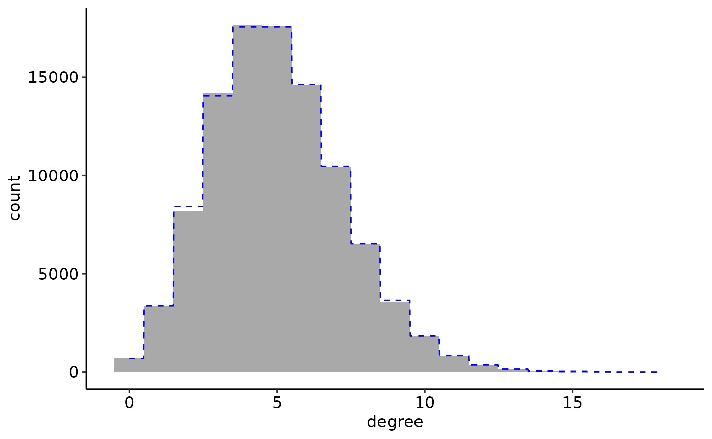
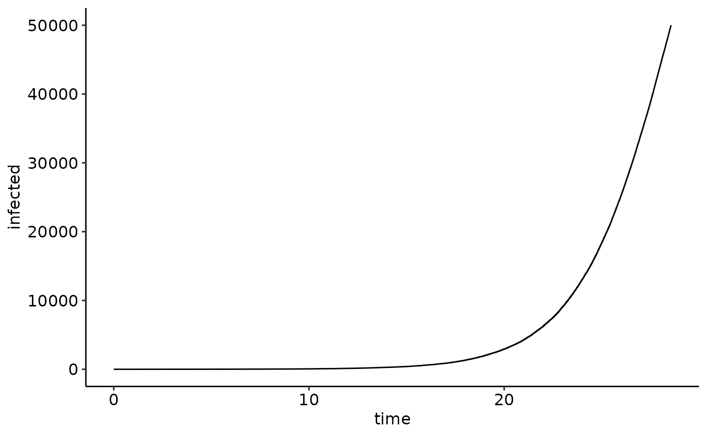
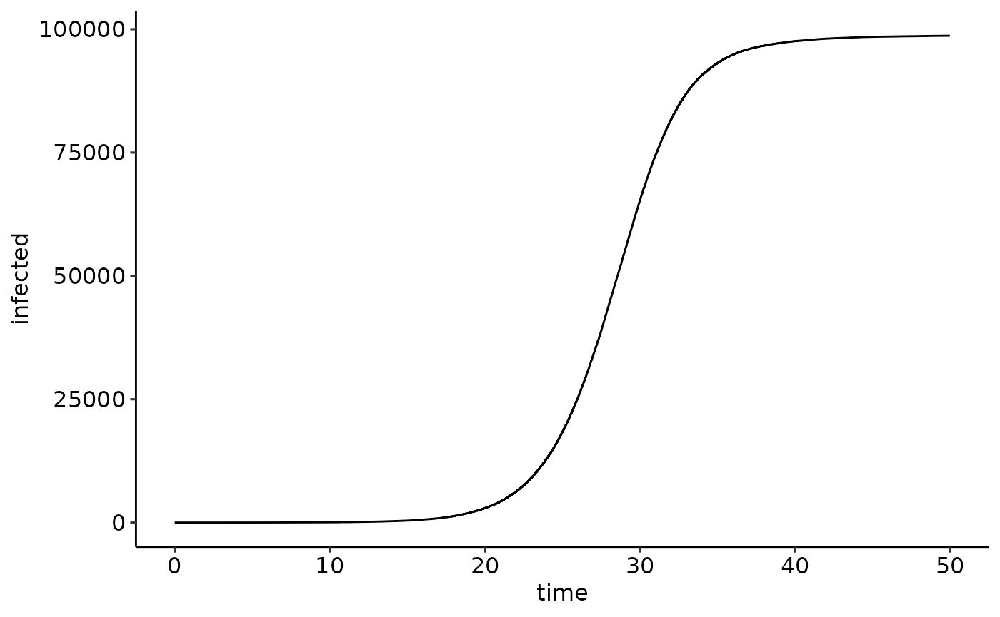
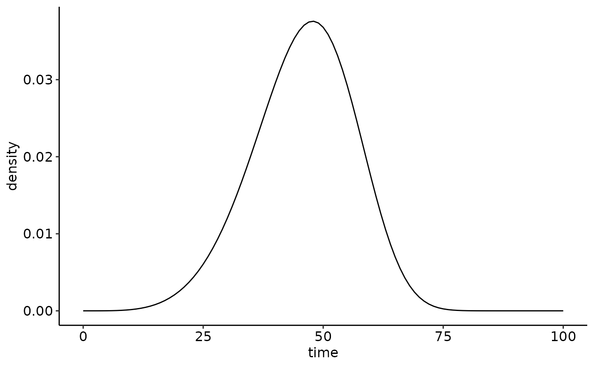
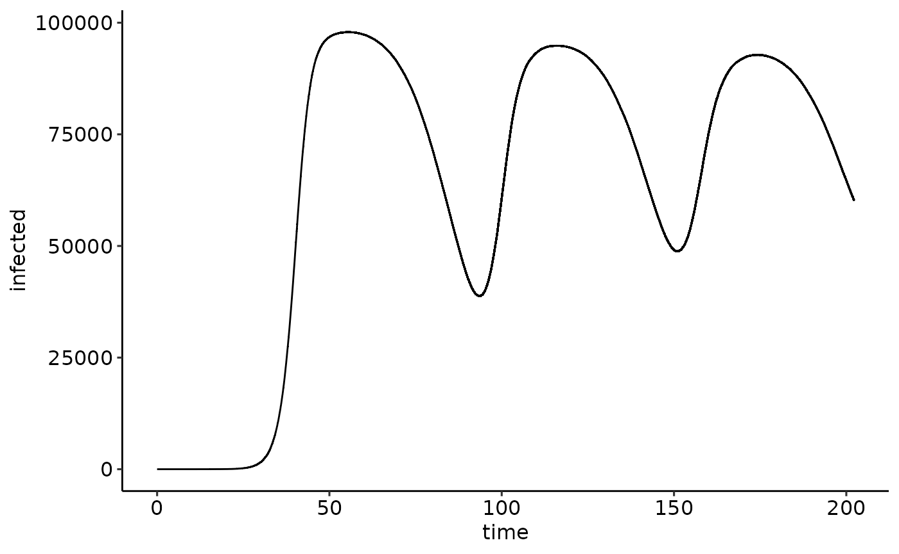

Loading the NEXTNetR package
We start with loading the NEXTNetR package. If the package is not already installed, see the website for installation instructions. We also load the ggplot2 and ggpubr packages for plotting and set a nice theme.
Creating and inspecting networks
Next we create a network object. To see the full list of network
types supported by NEXTNetR, type
help(network_types). Here, we create a random Erdős–Rényi
network of a given size, i.e. with a given number of nodes.
On Erdős–Rényi networks, each possible link has an probability to exist
independent of all other links. This probability is computed such that
nodes have the specified average degree (i.e. number of neighbours).
nw <- erdos_renyi_network(size=1e5, avg_degree=5)The object nw now represents a specific network. We can
inspect the network using the functions listed in
help(network_properties). For example, we can query the
number of neighbours of node 371 with
degree <- network_outdegree(nw, 371)
print(degree)
#> [1] 6and knowing the degree we can query all neighbours of node 371.
network_neighbour(nw, 371, 1:degree)
#> [1] 18386 32383 63810 66115 83635 88963Most inspection functions are vectorized and can query multiple nodes at once. For example, to plot the degree distribution as a histogram and compare it with the theoretically predicted Poisson distribution (dashed blue line) we can simply do
N <- network_size(nw)
ggplot(data.frame(degree=network_outdegree(nw, 1:N))) +
geom_histogram(aes(x=degree, y=after_stat(count)),
binwidth=1, fill='darkgrey', color=NA) +
geom_function(fun=function(n) N * dpois(round(n), 5),
n=1000, color='blue', linetype="dashed", linewidth=0.5)
Creating and inspecting time distributions
Before we can start a simulation, we next have to create time
distributions which represent the time it takes to transmit the disease
across a link, and for the time it takes for an infected node to
recover. We chose a log-normal distribution for the infection. By
specifying p_infinity = 0.1, we modify the infection time
distribution to produce an infinite infection time (i.e. no actual
infection) in 10% of cases; this means that neighbours of an infected
node only have a 90% chance of becoming infected eventually.
infection_time <- lognormal_time(mean=6, var=30, p_infinity = 0.1)While time distribution objects are mainly useful for epidemic
simulations, they can also be used similed to R’s built-in random
distributions, see help(time_functions). We can, for
example, plot the distribution’s density and survival function.
ggarrange(
ggplot() +
lims(x=c(0, 25)) + labs(x='time', y='density') +
geom_function(fun=time_density, n=1000,
args=list(timedistribution=infection_time)),
ggplot() +
lims(x=c(0, 25), y=c(0,1)) + labs(x='time', y='survival') +
geom_function(fun=time_survivalprobability, n=1000,
args=list(timedistribution=infection_time)),
ncol=1
)
Creating and running simulations
To run a simulation, we now create a simulation object which binds together the network and the infection time distribution we created above
sim <- simulation(nw=nw, psi=infection_time)Finally, we add an initial infection to get the epidemic going
simulation_addinfections(sim, nodes=c(1), times=c(0.0))and start the simulation, telling it to run until either time 100 or until 50,000 nodes have been infected.
events <- simulation_run(sim, stop=list(time=100, total_infected=50e3))Running a simulation returns a data.frame listing all
the events that occurred. We can use this to plot the size of the
epidemic over time.

Simulations can be continued by calling simulation_run
again. To continue the simulation until time 50, we do
events2 <- simulation_run(sim, stop=list(time=50))To plot the full trajectory, we must combine the events reported by
the first call of simulation_run with the events reported
by the second call,

Adding a recovery (or reset) time
In our previous simulation, nodes who were infected stayed infected indefinitely. We now add a recovery time so that nodes eventually return to their original state. Note that recovery here also implies that nodes become susceptible to reinfection; a better term may therefore be reset. For the recovery time distribution, we pick a weibull distribution
recovery_time <- weibull_time(shape=5, scale=50)
ggplot() +
lims(x=c(0, 100)) + labs(x='time', y='density') +
geom_function(fun=time_density,
args=list(timedistribution=recovery_time))
To run the simulation, we again create a simulation object, this time
specifying the recovery time through the rho parameter. The
trajectory now shows a wave-like pattern
sim <- simulation(nw=nw, psi=infection_time, rho=recovery_time)
simulation_addinfections(sim, nodes=c(1), times=c(0.0))
events <- simulation_run(sim, stop=list(time=300, total_infected=300e3))
ggplot(events) +
geom_line(aes(x=time, y=infected))